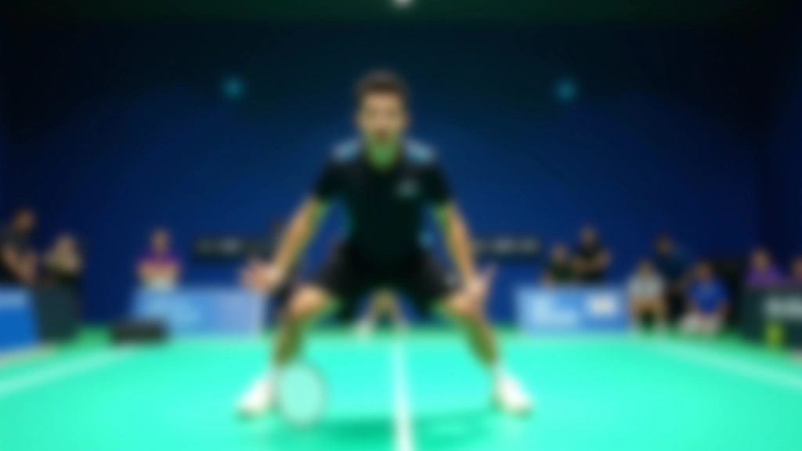
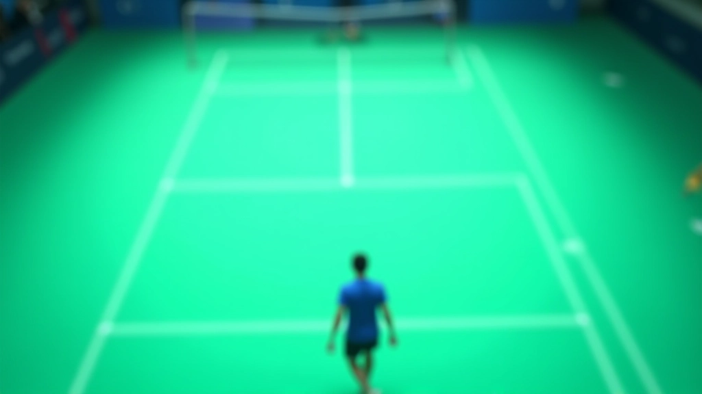
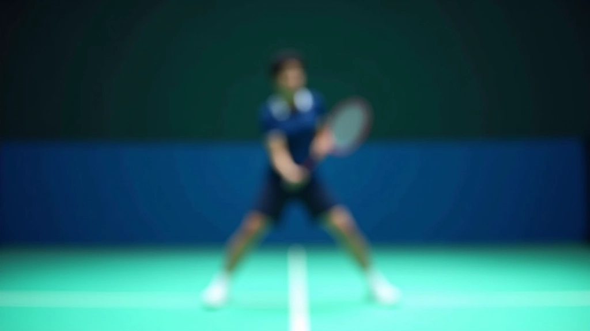
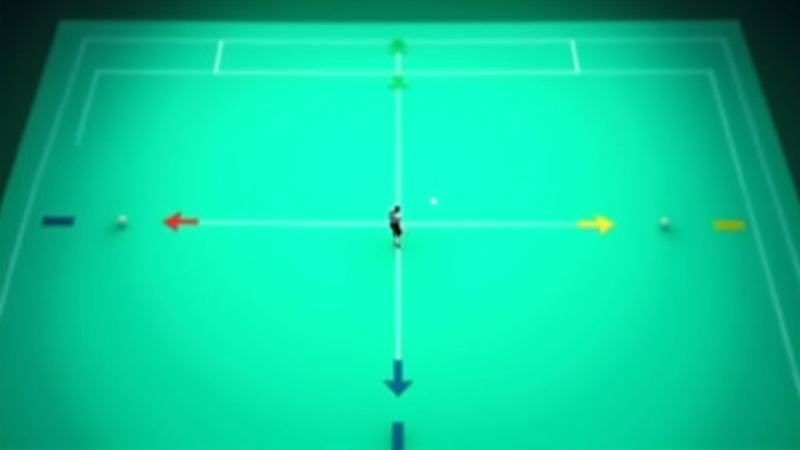
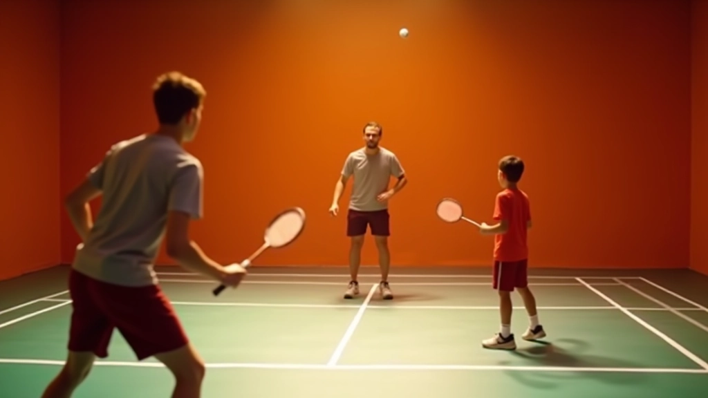

حركة القدمين الأساسية — البداية الحقيقية
تعلم الخطوات الأساسية التي تضعك في الموضع الصحيح قبل أن يضرب خصمك الكرة حتى.
اقرأ المقالكيف يمكنك السيطرة على اللعبة من خلال التموضع الذكي والحركة المركزية

منتصف الملعب ليس مجرد موقع جغرافي — إنه موقع استراتيجي يتحكم في اللعبة بأكملها. عندما تسيطر على المنطقة الوسطى من الملعب، فأنت تقلل المسافات وتزيد خيارات ردودك. خصمك سيضطر للتحرك أكثر بينما تنت تبقى في موضع متوازن.
الفرق بين اللاعبين الأساسيين والبقية غالباً ما يكون في القدرة على البقاء في الموضع المركزي. لا يتعلق الأمر بالسرعة وحدها — بل عن الذكاء التكتيكي والقدرة على التنبؤ بحركات الخصم.
عندما تتحكم بمنتصف الملعب، تحصل على عدة مزايا واضحة. أولاً، تقليل المسافات: بدلاً من الركض ٦-٨ أمتار للرد على ضربة عميقة، قد تحتاج فقط ٢-٣ أمتار. هذا يعني رد أسرع وأكثر قوة.
ثانياً، خيارات أكثر في الرد. من الوسط، يمكنك الضرب نحو الزوايا بسهولة أكبر. يمكنك إرسال الكرة عميقة أو قريبة من الشبكة. لديك حرية الحركة التي لا تملكها من الخطوط الخلفية. خصمك لا يعرف بالضبط أين ستذهب الكرة التالية.
ثالثاً، السيطرة على الإيقاع. أنت تفرض سرعة اللعبة، وليس الخصم. هذا يقلل الضغط النفسي عليك ويزيده على خصمك.

هذا المقال يقدم معلومات تكتيكية وتعليمية حول لعبة الريشة الطائرة. النصائح المذكورة مبنية على أساليب شائعة في التدريب. كل لاعب له احتياجات مختلفة — يُنصح باستشارة مدرب متخصص لتطبيق هذه المبادئ بما يتناسب مع مستواك الحالي وأسلوب لعبك الشخصي.

الحركة ليست فقط عن الركض السريع. تحتاج إلى خطوات صغيرة وسريعة. عندما تنتظر الضربة القادمة من خصمك، كن في حركة دائمة — خطوات صغيرة تبقيك جاهزاً للاستجابة الفورية.
بعد أن تضرب الكرة من الخط الخلفي، عد فوراً نحو الوسط. لا تنتظر حتى ترى أين ستذهب الكرة. الخطوات الثلاث الأولى بعد الضربة حاسمة — يجب أن تكون سريعة وقصيرة. استهدف الوقوف في الوسط قبل أن يرد خصمك.
معظم اللاعبين يخطئون هنا. يضربون الكرة ثم ينتظرون بدلاً من التحرك فوراً. هذا يعطي خصمك الوقت الكافي لاختيار ضربة جيدة.
السيطرة على المركز تتطلب توازن جيد. قدماك يجب أن تكونا متباعدتان بقدر عرض الكتفين تقريباً. ركبتاك منثنيتان قليلاً دائماً. وزنك موزع بالتساوي بين القدمين. من هذا الموضع، يمكنك الحركة في أي اتجاه بنفس السرعة.
التوقع يأتي مع الممارسة. عليك قراءة حركات خصمك — موضع كتفيه، اتجاه نظره، طريقة مسك المضرب. اللاعبون الجيدون يتنبأون بالضربة قبل أن يرموا الكرة. هذا يعطيهم بداية أسرع.
اقضِ وقتاً في دراسة خصومك. لاحظ الأنماط. هل يضربون عميقة عادة عندما تكون الكرة عالية؟ هل يختارون الشبكة عندما تكون لديهم فرصة؟ هذه المعرفة توفر لك ثانية كاملة من الفائدة.


السيطرة المركزية لا تعني البقاء في مكان واحد. بل تعني الحركة السريعة من الوسط والعودة إليه. هذه حلقة مستمرة.
عندما تضطر للخروج إلى زاوية — مثلاً للرد على ضربة بعيدة — حرك قدميك بسرعة. اتخذ خطوات جانبية صغيرة إذا كانت الحركة قصيرة. اركض إذا كانت الحركة طويلة. المهم هو العودة السريعة للوسط بعد الضربة.
كثير من اللاعبين يقفون في الزاوية بعد الضربة. لا تفعل هذا. عودتك للوسط يجب أن تكون أسرع من خروجك. هذا يعطيك أفضلية واضحة في اللقطات التالية.
أفضل طريقة لتحسين السيطرة على منتصف الملعب هي التدريب المستهدف. ابدأ بتمارين بسيطة.
تمرين أول: اطلب من شريك تدريب أن يضرب الكرة من نقطة واحدة والتقط من الوسط. ركز على سرعة عودتك للمركز بعد كل رد. افعل هذا لمدة ٥ دقائق. ستشعر بتحسن ملحوظ في التوازن.
تمرين ثاني: لعب نقاط كاملة لكن ركز فقط على الموضع. لا تفكر في الفوز — ركز على البقاء في المركز. بعد عشر نقاط، ستلاحظ أن خصمك يحتاج لركض أكثر منك.

السيطرة على منتصف الملعب ليست موهبة — إنها مهارة يمكنك تطويرها. البداية بسيطة: لاحظ موقعك. بعد كل ضربة، اسأل نفسك: هل أنا في الموضع الأمثل للرد التالي؟ إذا كانت الإجابة لا، تحرك.
خلال أسبوعين من التركيز على هذا الجانب، ستلاحظ فرقاً واضحاً. ستشعر بتحكم أفضل. خصومك سيضطرون للركض أكثر. ولعبتك ستصبح أسهل وأكثر ثقة.
تابع تعلمك مع مقالات أخرى من تكتيكات تغطية ملعب الفردي
تعلم الخطوات الأساسية التي تضعك في الموضع الصحيح قبل أن يضرب خصمك الكرة حتى.
اقرأ المقال
تقنيات الحركة السريعة التي تمكنك من الوصول إلى أي ضربة على الملعب بسهولة.
اقرأ المقال
كيفية الانتقال من الدفاع للهجوم والانتهاء من النقاط بضربات قاضية قرب الشبكة.
اقرأ المقال